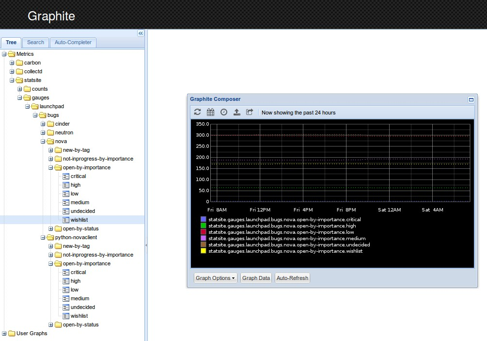
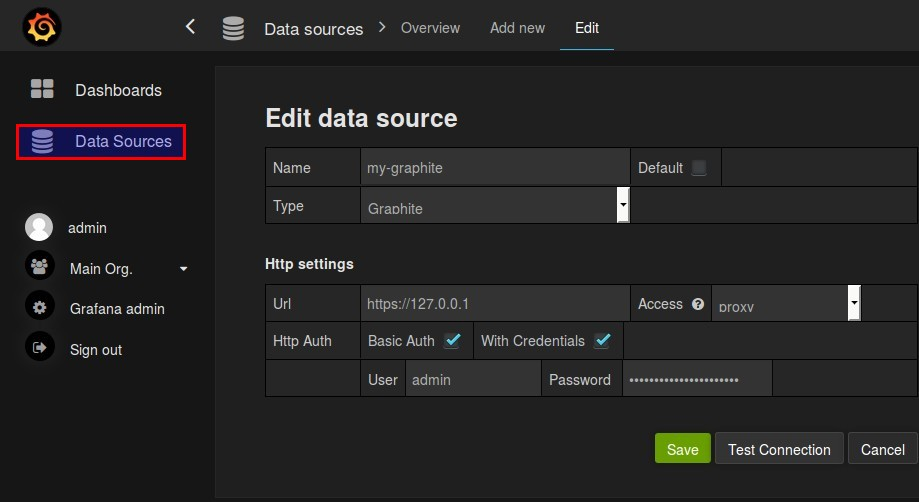
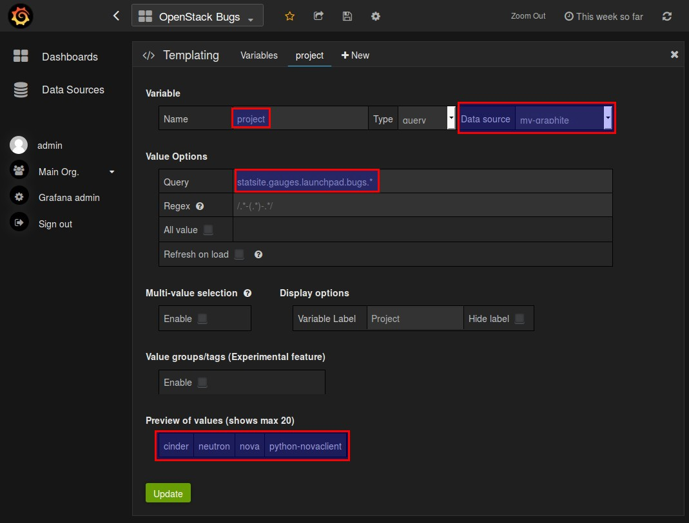
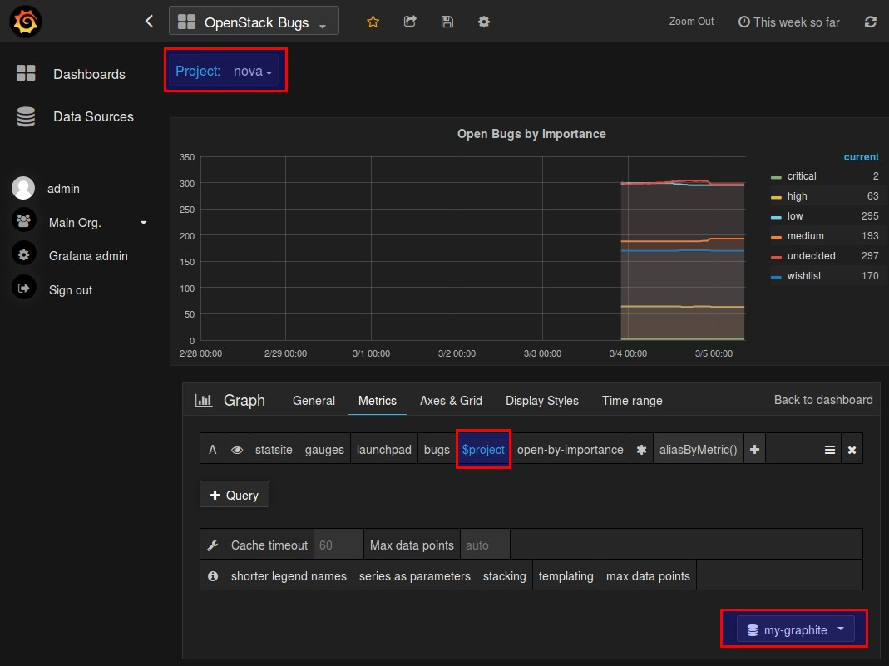

If you ever played around with time series data and wanted to visualize them with graphs in a nice way you probably have heard about Grafana. This post provides a step-by-step instruction on how to build a Grafana-playground in about 15 minutes. The setup will be build of statsd to collect metrics, graphite to store those metrics, and Grafana to visualize those metrics. We will also create and push custom metrics and create templated graphs based on them. This post won’t provide any in-depth details about statsd, graphite and Grafana itself.
Change history:
| Date | Change description |
|---|---|
| 2016-03-06 | The first release |
| 2016-03-08 | Changed the wording about the directories in /opt/ and fixed
a few minor grammar issues. |
The environment I used to write this post consists of:
Please note that:
Change the time zone of the VM to UTC-0, otherwise the time series data will
be bound to the time zone the VM got created with. This time zone could be
different each time you build a VM in a public cloud, depending on the cloud
provider and the location of the data centers they use.
After executing the command below, select Europe -> London to do that.
$ dpkg-reconfigure tzdata
We will later use helper scripts from a github repo, so we need git to clone these scripts:
$ apt-get install -y git
Create the directories which will contain our artifacts to get things running. I’ve chosen those arbitrarily, there is no technical need to use these but I will use them throughout this post:
$ mkdir -p /opt/grafana-poc/statsd-graphite/
$ mkdir -p /opt/grafana-poc/grafana-bin/
$ mkdir -p /opt/grafana-poc/custom-stats/
For the custom time series data we will create in a later step we will need additional python packages:
$ pip install launchpadlib
$ pip install python-statsd
Synthesize [1] installs statsd and graphite for us:
$ cd /opt/grafana-poc/statsd-graphite/
$ git clone https://github.com/obfuscurity/synthesize
$ cd synthesize
$ ./install
You can access the web UI of graphite at port 80. There are already
some metrics about the host machine (CPU time, memory usage, ...) in there.
You will see that the metrics are structured in a hierarchy. That will be
interesting later when we create a query in Grafana.
The default credentials to log in are:
admingraphite_me_synthesizeAs Grafana is not in the official repos of Ubuntu 14.04 we will download the package and install like this:
$ cd /opt/grafana-poc/grafana-bin/
$ wget https://grafanarel.s3.amazonaws.com/builds/grafana_2.6.0_amd64.deb
$ apt-get install -y adduser libfontconfig
$ dpkg -i grafana_2.6.0_amd64.deb
Other installation methods are described in [2].
You may want to allow anonymous access with viewer rights [3]. Be aware that users which are not logged in (and therefore are in the viewer role) can create dashboards but cannot save them.
$ vim /etc/grafana/grafana.ini
[auth.anonymous]
enabled = true
org_role = viewer
Everything is set up, start the engines:
$ service grafana-server start
Open the grafana dashboard with your browser and use port 3000 in the URL.
This is the admin URL which is necessary to save your created dashboards.
The default credentials to log in are:
adminadminThe Grafana UI is intuitive and you can build dashboards with graphs easily. We will create one after we pushed some custom metrics to statsd.
If you want to push your own metrics, below is an example. It queries information about OpenStack Nova bug reports from Launchpad and pushes it to statsd. It’s a simplified version of a PoC I made which I intend to make part of [4]. The key parts of the code are highlighted.
Go to the directory where we will create script:
$ cd /opt/grafana-poc/custom-stats/
Create the file bug_stats.py which collects the metrics and pushes them
to statsd. The highlighted lines are the key points and will be explained
after the script:
$ vim bug_stats.py
1 2 3 4 5 6 7 8 9 10 11 12 13 14 15 16 17 18 19 20 21 22 23 24 25 26 27 28 29 30 31 32 33 34 35 36 37 38 39 40 41 42 43 44 45 46 47 48 49 50 51 52 53 54 55 56 57 58 59 60 61 62 63 64 65 66 67 68 69 70 71 72 73 74 75 76 | #!/usr/bin/env python
from launchpadlib.launchpad import Launchpad
import os
import statsd
class BugStatsCollector(object):
"""Collect bug stats by Launchpad project name """
LP_OPEN_STATUSES = ["New", "Incomplete", "Confirmed",
"Triaged", "In Progress"]
LP_IMPORTANCES = ["Undecided", "Wishlist", "Low",
"Medium", "High", "Critical"]
def __init__(self, project_name):
self.project_name = project_name
cachedir = os.path.expanduser("~/.launchpadlib/cache/")
if not os.path.exists(cachedir):
os.makedirs(cachedir, 0o700)
launchpad = Launchpad.login_anonymously('bugstats',
'production',
cachedir)
self.project = launchpad.projects[self.project_name]
def get_open_by_importance(self):
"""Return the stats for open bugs, separated by importance.
:rtype: list of 2-tuple key-value pairs
"""
importance_stats = []
for importance in BugStatsCollector.LP_IMPORTANCES:
bug_tasks = self.project.searchTasks(
status=BugStatsCollector.LP_OPEN_STATUSES,
importance=importance,
omit_duplicates=True)
stats_key = self._get_valid_stat_key_name(importance)
stats_value = self._count_bug_tasks(bug_tasks)
stat =(stats_key, stats_value)
importance_stats.append(stat)
return importance_stats
def _get_valid_stat_key_name(self, name):
stat_key = name
stat_key = stat_key.replace(" ", "").lower()
stat_key = stat_key.replace("(", "-")
stat_key = stat_key.replace(")", "")
return stat_key
def _count_bug_tasks(self, bug_tasks):
return int(bug_tasks._wadl_resource.representation['total_size'])
def push_to_statsd(metric_name, bug_stats):
"""push bug statistics to statsd on this host machine
:param metric_name: The name of the metric
:param bug_stats: list of 2-tuple key-value pairs to push
"""
print("metric name: " + metric_name)
gauge = statsd.Gauge(metric_name)
for bug_stat in bug_stats:
print("%s:%s" % (bug_stat[0], bug_stat[1]))
gauge.send(bug_stat[0], bug_stat[1])
if __name__ == '__main__':
projects = ['nova', 'python-novaclient', 'cinder', 'neutron']
for project_name in projects:
collector = BugStatsCollector(project_name)
metric_name = 'launchpad.bugs.%s.open-by-importance' % project_name
bug_stats = collector.get_open_by_importance()
push_to_statsd(metric_name, bug_stats)
|
high:33 means,
we have 33 bug reports which are rated with a high importance.This script will create this hierarchy in graphite:
The leaves of this tree will be filled with the values we provide attached to a timestamp statsd will get from the host. That’s why setting the time zone in A few Prerequisites was important. Running this script multiple times will create the time series data we want to visualize with Grafana.
Run bug_stats.py in an interval of 5 minutes (= 300 seconds) as nohup
to avoid interruption when the SSH session to your VM terminates:
$ nohup watch -n 300 python /opt/grafana-poc/custom-stats/bug_stats.py &
In case you want to kill that background process:
$ ps aux | grep bug_stats
$ kill -9 <pid>
As the script above collects metric data which doesn’t change that much a day we won’t see any major spikes and drastic changes, but it gives you an idea how to do it with data you are interested in. I’ve chosen the Launchpad data because I’m involved in the bug management in OpenStack Nova and have an interest in trends and historical data of bug reports.
As we get the stats from 4 different projects and want to reuse the same graph, we will template it with the project name.
At first we need to connect Grafana to the datasource graphite. Use the credentials mentioned in Setup Statsd and Graphite if you haven’t changed them.
The name of the datasource will be used in later steps.
After that we can create a variable so that we can switch between the four different projects. We use the datasource from the previous step and query the project names. The name of the variable is used later in data queries.
Now we can build a graph which makes use of the custom metrics we collected. We will also use the variable we declared in our query to use the same graph for different projects. You will notice that the query we use matches the metric name we declared in Collect and Push Custom Metrics.
Save the dashboard and switch between the projects to see the different collected data.
Provided with the steps above you should get a running playground in around 15 minutes. All the pieces work together without any fakes or mocks. Playing around with your custom time series data and its visualization with Grafana for PoCs should now be easier. Grafana provides a lot of functions to manipulate the data:
This data visualization of time series data can give you a lot of insights into the entity you monitor.
{kind=link}
{kind=link}
{kind=link}
{kind=link}